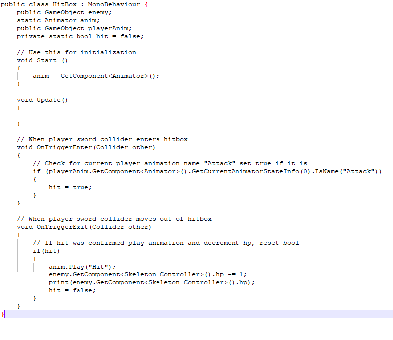

Team Members:
Lead animation, I/O, Physics, and script designer - Kevin Wong
Lead graphics, Level design, and script designer - Jonathan Billington
Lead sound, UI, Level design, and script designer - Michael Hughes
Schedule of due dates has been created and should be followed to ensure project is successful. Hitbox script now works better and registers per hit after attaching the collider to the sword joint instead of the actual sword. Player movement now has better animation transitions, before it was very clunky and didn't work quite as well as intended.
Presentations concluded this week and Kevin created a deadline priority list that has to be finished before first playable presentations are due. Scripts that have been added: Skeleton_Controller.cs, PlayerHitBox.cs, HitBox.cs Skeleton_Controller.cs is a script that contains the basic AI for a Skeleton enemy, path traversal is controlled by NavMeshAgent(a built in path finding tool), AI state machine is hard coded to have states that switch according to player actions. So far only follow, stop, attack, and death state is currently implemented. PlayerHitBox.cs and HitBox.cs are almost identical in that they take GameObjects such as the player and enemy models and determine if there is a collision with their colliders to determine if hits register or not. OnTriggerEnter serves this purpose for now until a more smooth aproach can be figured out since it isn't 100% reliably counting hits by the player. If a player uses the attack button and the collider enters the collider zone of the object with the script attached, their hp will be decremented.  Throughout the week we should have a basic plan for the level design fleshed out so we can start adding assets.
Presentations started this week and our group coloborated in google slides to create a presentation.
We met up during the week outside of class and discussed each topic that needed to be on our slides and created slides accordingly, including many different gifs for examples.
The link to the slideshow can found HERE
Paladin was taken from Mixamo along with some sword and shield animations to use as a base model for our project.
The staircase asset was taken from the StoneKeep asset package found in the unity store.
The walls and floors are basic planes with images stretched on them.
Movement.cs will control the 3d model using character controller and reading inputs from WASD on the user's keyboard.
CameraControl.cs will handle how the 3rd person viewing will be controlled by the player using the mouse's axis as rotation points
Walk.cs will control the player's animations when an action is taken and translates it to a boolean trigger within the animator in Unity.
Code can be found in our github page
Talked about the game, the assets that need to be acquired, what scripts need to be written, and features of the game to implement. Also talked about who will do what, when everything needs to be finished and
also created a github page to track project changes.
Github page can be found HERE
Team is established comprising of Kevin Wong, Jonathan Billington, and Michael Hughes; students at the Univeristy of Central Florida.